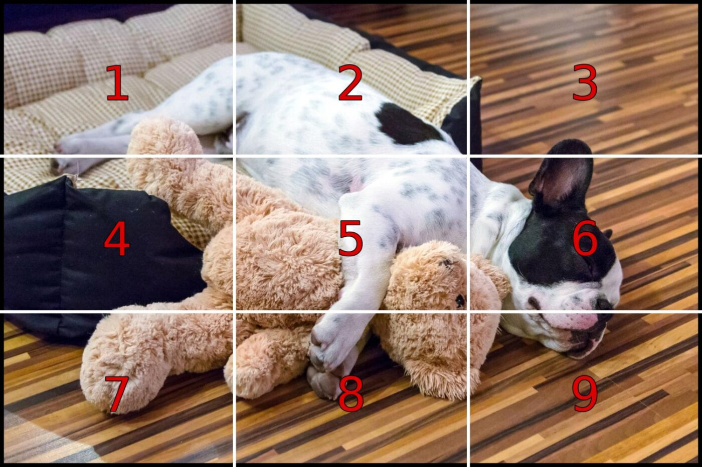
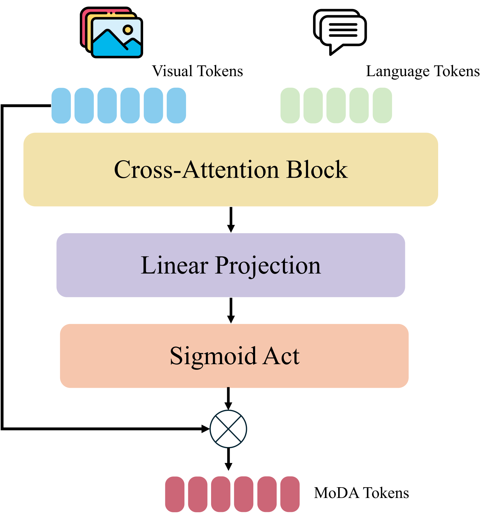
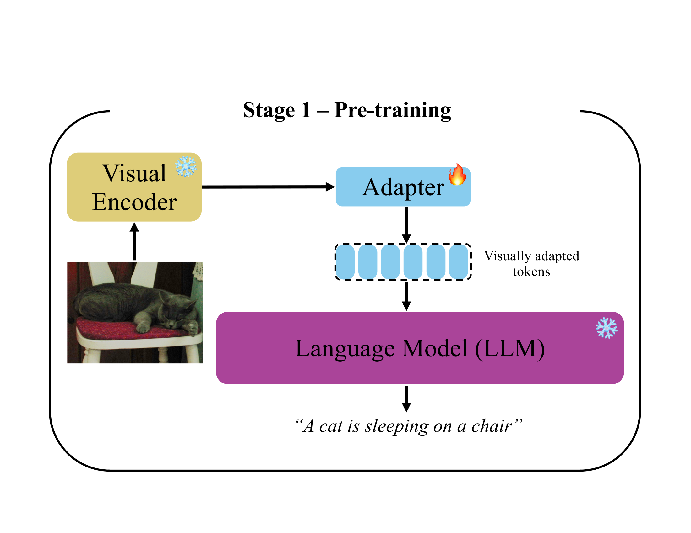
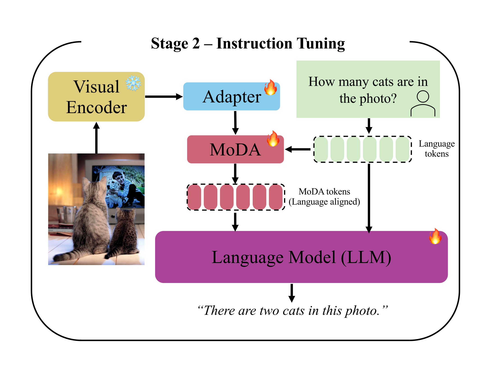
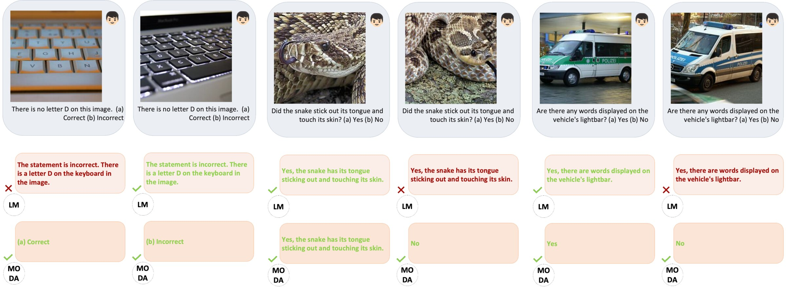

Granularity
Operates on channels within each token, not whole tokens, reweighting embedding dimensions rather than selecting or dropping tokens.
ICML 2026 · Multimodal Large Language Models
1 Dartmouth College 2 KAUST † Equal senior authorship
Multimodal Large Language Models integrate pretrained visual encoders with LLMs, yet they struggle with fine-grained visual grounding because of semantic entanglement in visual patch representations: a single patch blends multiple distinct elements, making it hard to focus on instruction-relevant detail.
We propose MoDA (Modulation Adapter), a lightweight module that enhances grounding through instruction-guided, channel-wise modulation. Unlike token-level methods such as Q-Former that perform additive feature selection, MoDA operates at the channel level via multiplicative (Hadamard) modulation on already-aligned features, giving fine-grained control over which embedding dimensions matter for each instruction, without architectural modifications or extra supervision.
Across 12 benchmarks and three architectures, MoDA delivers consistent gains: +12.0 on MMVP (LLaVA-1.5), +4.8 on ScienceQA (LLaVA-MoRE), and +4.9 ScienceQA / +4.1 RealWorldQA / +3.8 GQA on Qwen3-VL, confirming the gains generalize beyond CLIP-based encoders, with minimal overhead.
A Vision Transformer cuts an image into a grid and compresses each cell into a single embedding. Most cells end up holding several things at once, so the model reasons over a mixture instead of the actual detail. Hover the patches.

MoDA sits at the adapter-to-LLM interface. It cross-attends the instruction to the pre-aligned visual features, then emits a soft mask in [0,1] that scales each feature channel, boosting the relevant dimensions and suppressing the rest.

F(·) is a stack of cross-attention layers; W a learned
projection; σ a sigmoid bounding the mask to [0,1].
⊙ is the Hadamard product along the embedding dimension.
Standard autoregressive cross-entropy. No new data, no extra supervision. MoDA drops into the two-stage LLaVA instruction-tuning pipeline.
Operates on channels within each token, not whole tokens, reweighting embedding dimensions rather than selecting or dropping tokens.
Multiplicative Hadamard modulation, not additive residuals, enabling selective suppression of irrelevant dimensions.
Acts post-alignment on already-projected features, complementing existing adapters instead of replacing them.


Improvements are strongest on fine-grained, vision-centric and hallucination tasks, and scale with the quality of the visual encoder.
+ MoDA (ours) Δ shown vs. the matched baseline. green = gain, amber = drop. All metrics are percentages; higher is better.
On MMVP, the baseline (LM) often produces lengthy free-form answers that miss the question format. MoDA consistently selects the correct alternative through better fine-grained grounding.

@inproceedings{barrios2026moda,
title = {MoDA: Modulation Adapter for Fine-Grained Visual
Understanding in Instructional MLLMs},
author = {Barrios, Wayner and Villa, Andr\'es and
Leon Alcazar, Juan C. and Jin, SouYoung and
Ghanem, Bernard},
booktitle = {Proceedings of the International Conference on
Machine Learning (ICML)},
year = {2026}
}